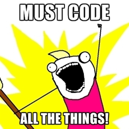

Going Postal
with postal.js
in five parts
Part 1
In which we compare DOM events
to postal messages
DOM events are interaction-oriented
$('#foo').on('click', function () {...});
$('#foo').on('hover', function () {...});
$('#foo').on('keydown', function () {...});
$('#foo').on('mouseover', function () {...});
$(document).on('load', function () {...});
$().ready(function () {...});
jQuery supports user-defined events
<div id="foo"><button id="bar" /></div>
<script type="text/javascript">
$('#foo').on('launch', function () {
launchAllMissiles();
});
$('#bar').trigger('launch');
</script>
But...
- DOM events only bubble UP the DOM tree
- Since events can be triggered anywhere in the DOM tree, the best place to put listeners would be at the top of the tree (e.g. the `body` tag)
- Only one callback can be assigned for a specific event on a given element
A common scenario
<script type="text/javascript">
$('body').on('error-raised', function (evt, msg) {
$('#error-message').html(msg).show();
});
//sometime later...
$.post('/my/url', data, function () {
//yay our post worked!
}).error(function (){
$(this).trigger('error-raised', ['bad!']);
});
</script>
Use postal.js instead
<script type="text/javascript">
postal.subscribe('error-raised', function (msg) {
$('#error-message').html(msg).show();
});
//sometime later...
$.post('/my/url', data, function () {
//yay our post worked!
}).error(function (){
postal.publish('error-raised', 'bad!');
});
</script>
Part 2
In which we acknowledge that postal.js is great
but your code is still a mess
and you are grounded until you clean it up
Organizing JavaScript code is challenging
- Encapsulate code to avoid global variable collisions
- Deconstruct code and isolate reusable components
- Organize script files for easy maintainability
- Load script files in the correct order (satisfy dependencies)
Organizing JavaScript code is challenging
- Avoid jQuey spaghetti code
- Avoid large trees of nested callbacks
- Segregate UI code from application logic
Organizing code into modules
- mod·ule [moj-ool]:
-
Code that is encapsulated within a function closure that has a course, public API.
Organizing code into modules
//tax rate module
var taxRate = (function () {
//"private" members
var _rates = {
'mo': 7.925
};
//public API
return {
calc: function (state, retail) {
return _rates[state] * retail;
}
};
}());
var retail = 10.53;
var tax = taxRate.calc('mo', retail);
var total = retail + tax;
Module communication using callbacks
var mod1 = (function () { ... }());
var mod2 = (function () { ... }());
//similar to .NET events
mod1.onSomeEvent(function () {
mod2.doSomethingInResponse();
});
Module communication using postal
var mod1 = (function ($, bus) {
var $list = $('#items');
bus.subscribe('new-items', function (items) {
items.forEach(function (item) {
$list.append($('<li></li>')
.html(item));
});
});
}(jQuery, postal));
var mod2 = (function (bus) {
bus.publish('new-items', ['foo', 'bar']);
}(postal));
Better modules with require.js
- Simple configuration tells require.js where to look for JavaScript files
- One script tag required on your page; require.js does the rest
- Resolves module dependencies (jQuery, postal, underscore, etc.)
- Lots of other awesome sauce!
Part 3
In which we learn about
advanced features in postal.js
Part 4
In which some actual code is shown
and you are less bored

Part 5
In which I point you
to additional resources
Additional Resources
Client-side Messaging in JavaScript
Additional Resources
Postal.js on Github
Additional Resources
jsFiddle examples
Additional Resources
Jim Cowart @ifandelse